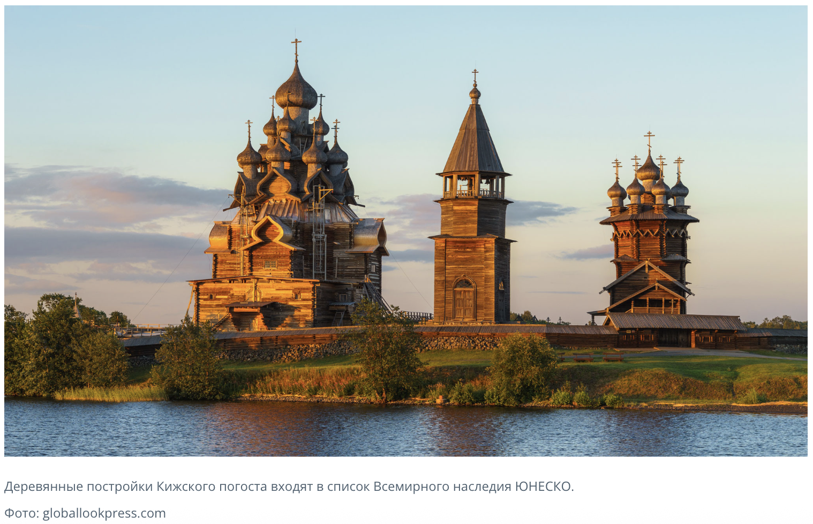

Rusn 388 Village Prose.
Village prose is a literary movement that portrays the Russian village as the moral and cultural core of the nation while criticizing Soviet modernization. Literary historian Kathleen Parté argued that village prose replaced socialist radiant future with the radiant past.
Time: 1950s-1970s.
Solzhenitsyn’s role was crucial because:
His story Matryona’s Home became a model text of the genre.
His moral critique of Soviet society shaped the ideological framework of the movement.
He helped legitimize the idea that the fate of the Russian village reflects the fate of the nation.
Main features of village prose
- Focus on rural life and traditional culture
The stories center on peasants, small communities, and the rhythms of village life—farming, nature, seasonal cycles, and folk traditions.
-
Critique of Soviet modernization
Many works implicitly or openly criticize collectivization, industrialization, and bureaucratic modernization, which were seen as destroying traditional village culture. Informal economic practices (blat).
-
Moral and spiritual themes
The village is often presented as the repository of ethical clarity, memory, and spiritual depth, frequently tied to Russian Orthodox values and historical continuity.
-
Nostalgia and historical memory
Writers often depict the loss of traditional life and the trauma inflicted on villages by Stalinist policies, especially collectivization and wartime devastation.

Fig.1. Kizhi Churches in Northern Russia (1600s) (62.066667°N 35.225°E)